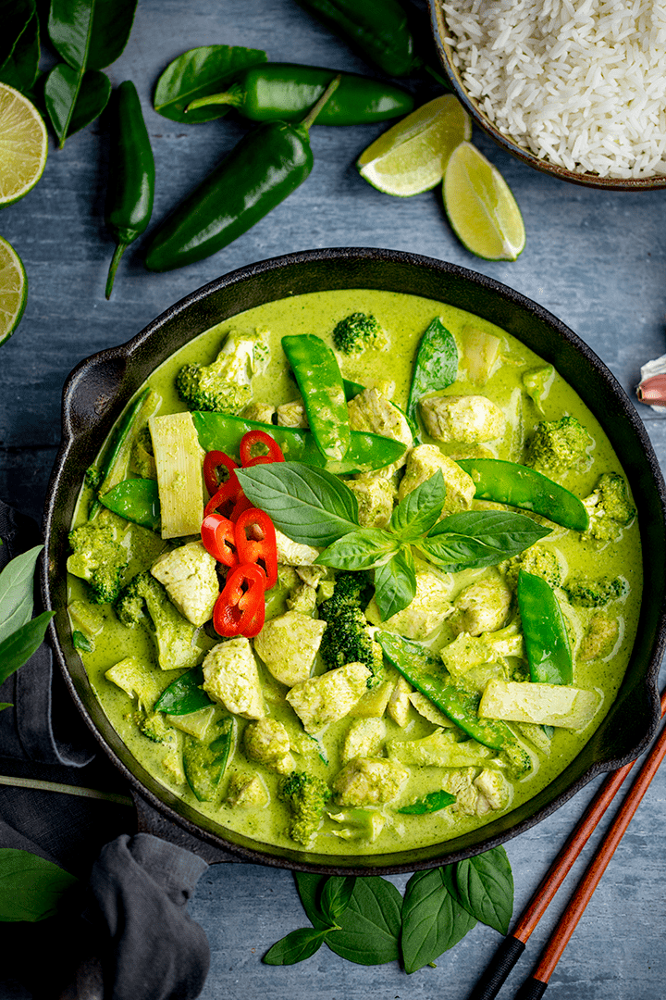
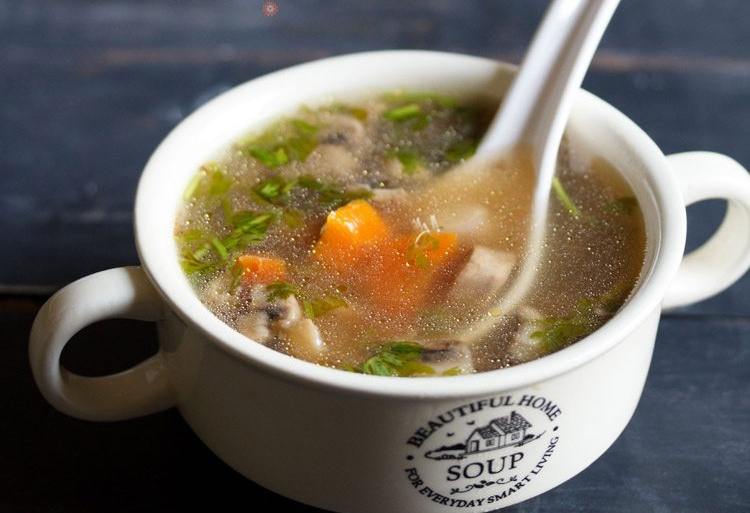

Pad Thai

- 200g rice noodles
- 2 tbsp vegetable oil
- 2 cloves garlic, minced
- 100g tofu, cubed
- 100g shrimp, peeled and deveined
- 2 eggs, lightly beaten
- 2 tbsp fish sauce
- 1 tbsp soy sauce
- 1 tbsp tamarind paste
- 1 tbsp palm sugar
- 1 cup bean sprouts
- 2 green onions, sliced
- 1/4 cup crushed peanuts
- Lime wedges for serving
-
Soak rice noodles in warm water until softened. Drain and set aside.
-
Heat oil in a wok or large skillet over medium-high heat. Add garlic
and cook until fragrant.
-
Add tofu and shrimp, stir-frying until shrimp turns pink and tofu is
lightly browned.
-
Push ingredients to the side of the pan, pour beaten eggs into the
center, and scramble until cooked.
-
Add rice noodles to the pan along with fish sauce, soy sauce, tamarind
paste, and palm sugar. Toss to combine.
-
Stir in bean sprouts and green onions, cooking until heated through.
- Serve hot, garnished with crushed peanuts and lime wedges.
Green Curry Chicken Recipe

- 400ml coconut milk
- 2 tbsp green curry paste
- 400g chicken breast, sliced
- 1 cup bamboo shoots
- 1 red bell pepper, sliced
- 1 tbsp fish sauce
- 1 tbsp palm sugar
- 10-12 Thai basil leaves
- Cooked jasmine rice for serving
-
In a large pot or wok, heat half of the coconut milk over medium-high
heat until it starts to bubble.
-
Add green curry paste and stir-fry until fragrant, about 1 minute.
- Add chicken slices and cook until no longer pink.
-
Pour in remaining coconut milk, bamboo shoots, and bell pepper. Stir
well.
- Season with fish sauce and palm sugar, adjusting to taste.
-
Simmer for 10-15 minutes until chicken is tender and flavors are well
combined.
- Stir in Thai basil leaves just before serving.
- Serve hot with jasmine rice.
Tom Yum Goong Recipe

- 4 cups chicken or vegetable broth
- 200g shrimp, peeled and deveined
- 2 stalks lemongrass, cut into 2-inch pieces and smashed
- 4 kaffir lime leaves
- 3 slices galangal or ginger
- 2-3 Thai bird's eye chilies, crushed
- 200g cherry tomatoes, halved
- 1 cup button mushrooms, sliced
- 2 tbsp fish sauce
- 2 tbsp lime juice
- 1 tbsp palm sugar
- Fresh cilantro leaves for garnish
-
In a pot, bring chicken or vegetable broth to a boil over medium-high
heat.
-
Add lemongrass, kaffir lime leaves, galangal or ginger, and crushed
chilies. Simmer for 5 minutes.
-
Add shrimp, cherry tomatoes, and mushrooms. Cook until shrimp turns
pink and opaque.
-
Season with fish sauce, lime juice, and palm sugar. Adjust seasoning
to taste.
-
Remove from heat and discard lemongrass, kaffir lime leaves, and
galangal slices.
- Serve hot, garnished with fresh cilantro leaves.